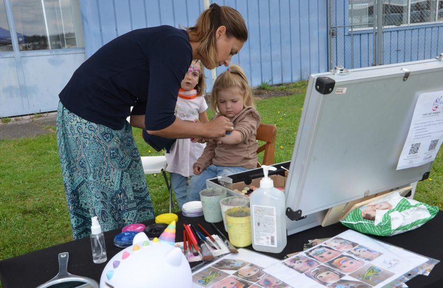
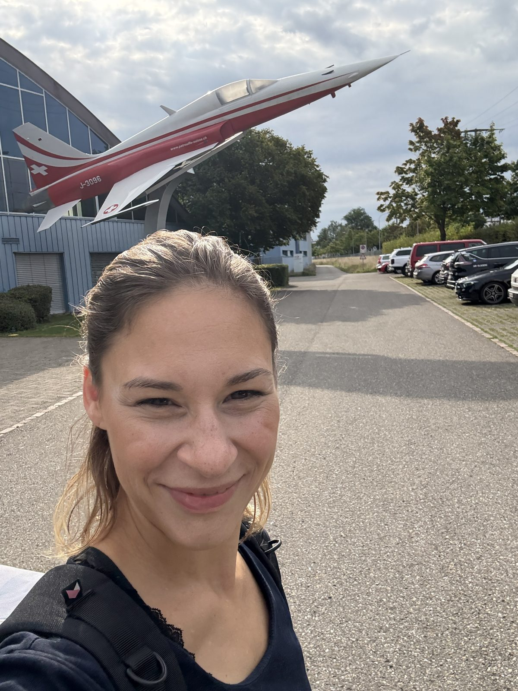
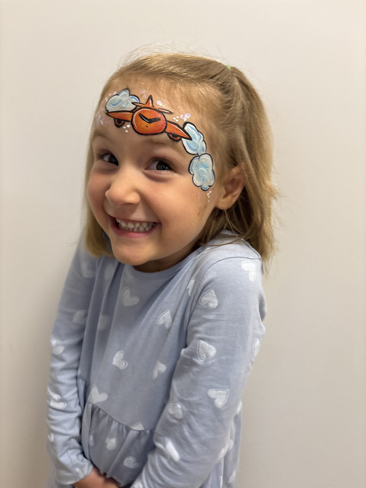
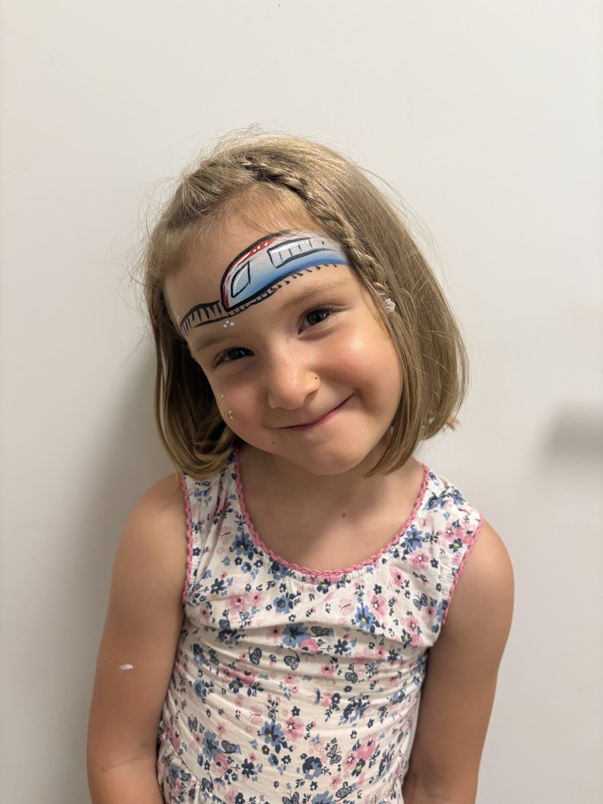
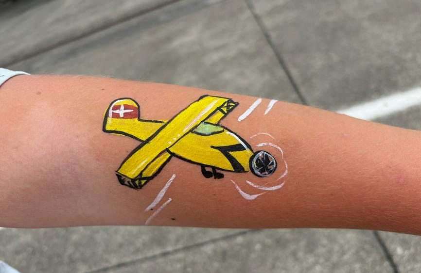
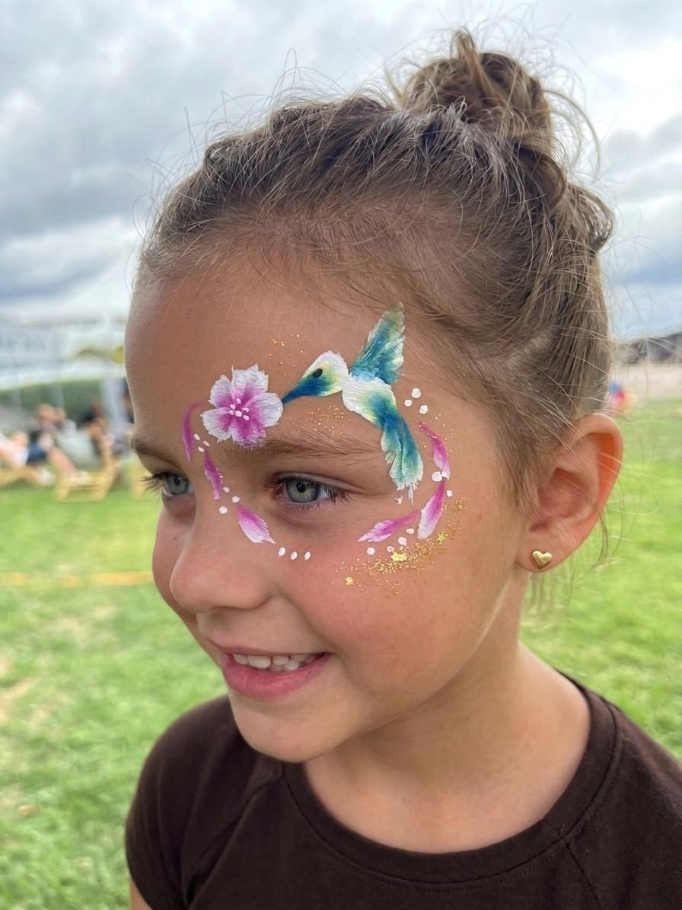
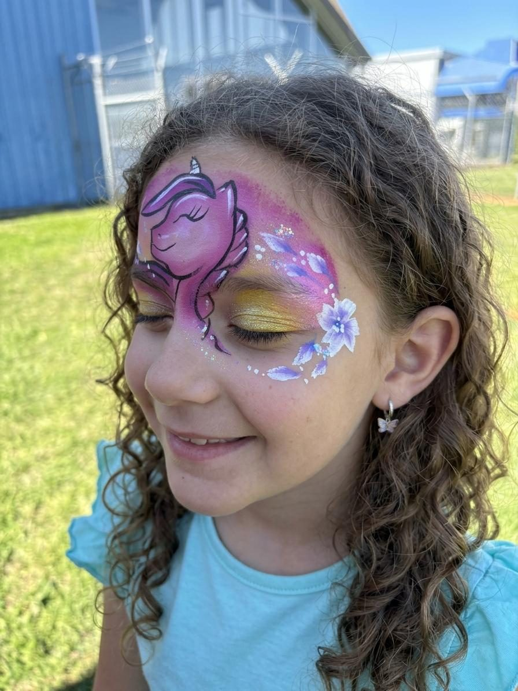
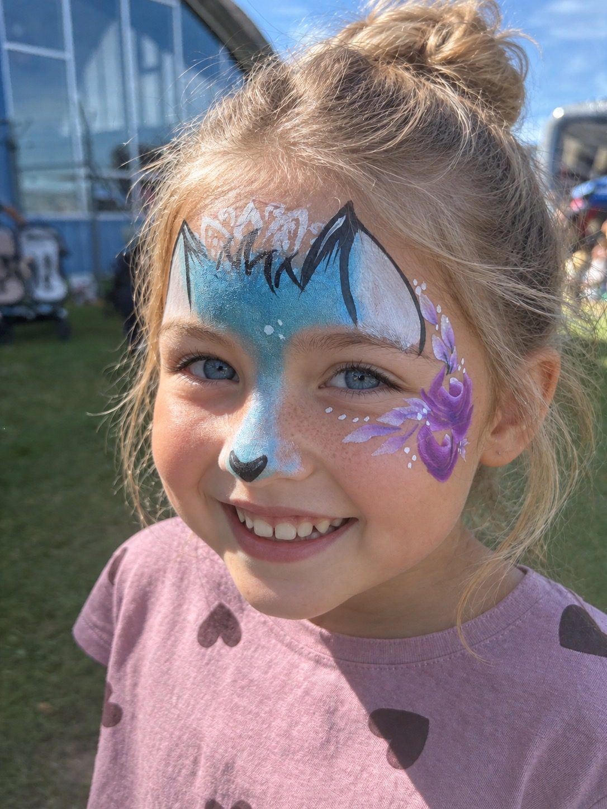

Flug & Zug 2025 and 2026
For the second year in a row, I had the pleasure of adding a splash of colour to children's faces at Flug & Zug, the two-day event held at the Air Force Centre Dübendorf. Everything revolved around biplanes, trains and helicopters.
And still, a few unicorns, hummingbirds and other designs made it onto the kids' faces over the two days — what a wonderful event!
More about Flug & Zug →






